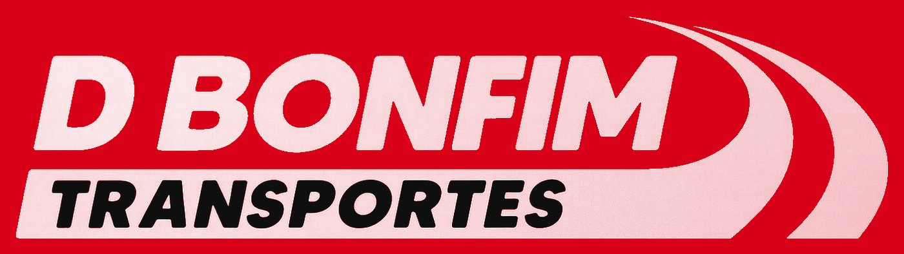

Estamos em manutenção
Nosso site está passando por melhorias para te atender melhor. Em breve retornamos ao ar. Agradecemos a sua paciência.
Atualizando sistemas68%

Nosso site está passando por melhorias para te atender melhor. Em breve retornamos ao ar. Agradecemos a sua paciência.